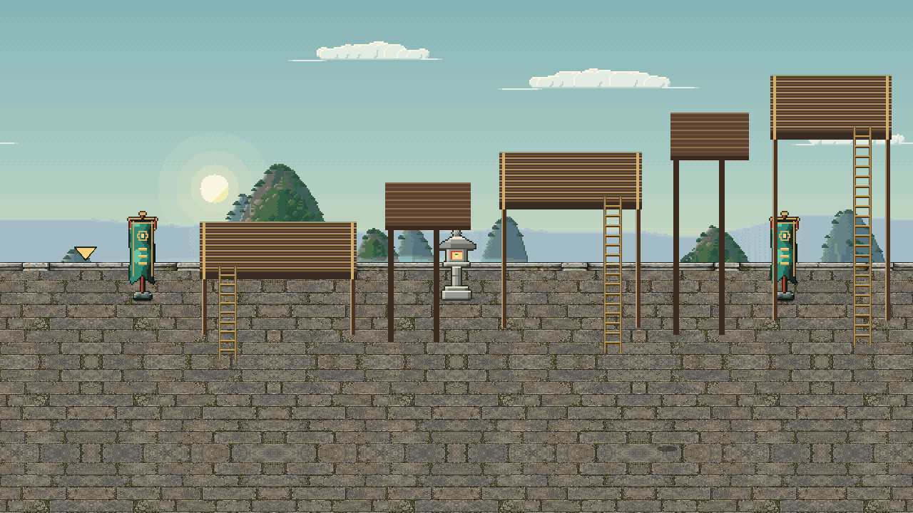
Bag
Spirit Gourd
Key Pouch 3
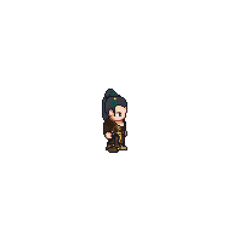
Hat
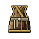
Robe
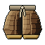
Trousers
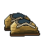
Boots
Weapon
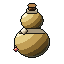
Gourd
Cape
Talisman
Opens later
Weapon: fists until the Weapon Hall, Bone Forging 3
Cape: Heaven Glimpse 1 · Talisman: Spirit Awakening 1
All8
Gear1
Pills0
Materials5
Other2
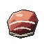
3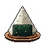
6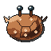
5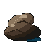
3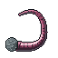
3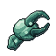
2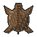
6Space 8 / 25
Starter Spirit Gourd
A Bamboo Gourd holds 30
Sort
Walk over what falls: it lands in the first empty space.
Sell loose finds to a trader: the Snapper Claw fetches 40 taels.
Tap a thing to see what it does.
Plain Straw Hat
Common · Plain · Hat
iLv 1
Your hat slot is empty: wear it
Physical defence1▲ 1
Soul defence2▲ 2
Accuracy1▲ 1
Worn gear shows on you and adds its numbers. Finer grades and qualities roll more.
Equip
Lock
Discard
···